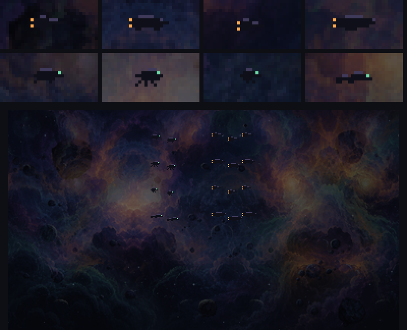

A batalha ao fundo — rodada 3
08/11 · plano plans/2026-11-08-cenario-casco-rodada3.md · no jogo: ?cenario=novo
(com &batalha=0, sem ela).
✅ A resposta dele e o ajuste (fechamento da rodada 3)
"As silhuetas podem ser uma variedade das criadas. Ora passam frotas de uma, outra e por ai vai. A frequencia pode ser aumentada ligeiramente [...] Mas deixe discretas como estao. A frequencia e a força dos claroes estão bons."
- A variedade: cada passagem sorteia um modelo de nave e um de criatura (A–D), e a frota inteira voa esse par.
- A frequência, um pouco maior: a chance por janela calma de 75% para 90%, e o intervalo mínimo de 8 s para 6 s. Nas 3 cabeças: 4 passagens em 60 s (antes, 2).
- Discretas como estavam; os clarões sem mudança.

As 3 cabeças, de 6 a 60 s, com as frotas variadas.
As silhuetas — para você escolher (depois)
Desenhadas em pixel (são pequenas demais para o gerador): de 7 a 14 px, quase pretas, com um fio da luz da nebulosa em cima. Em cima, cada uma 6× sobre o céu da arena; embaixo, todas em tamanho de jogo (o 2× da tela), as naves fugindo e as criaturas atrás. O jogo está usando a A e a A até você escolher.

- Naves (motor âmbar): A caça de nariz longo · B canhoneira pesada com quilha · C interceptor pequeno · D fragata longa.
- Criaturas (olho verde-água): A manta com cauda de chicote · B pequena lula com tentáculos · C vespa-drone · D serpentinha longa e baixa.
O que entrou
- Clarões: explosões distantes na nebulosa: um núcleo quente, um bolsão pontilhado que esfria e um brilho fraco que acende o gás em volta. Raros (um a cada 6–10 s), no Ato 2 e na arena. As nuvens à deriva passam na frente.
- As passagens (só na luta final, só nos momentos calmos): 1–3 naves saem da névoa fugindo de 2–3 criaturas e trocam tiros de 3 px (âmbar e verde-água). Uma nave é atingida: clarão, o motor apaga, ela segue girando na inércia (no vácuo nada cai) soltando fumaça, e explode. O resto volta para a névoa. Dura ~4,5 s, na faixa alta do céu e nos dois terços da esquerda, longe dela.
- Os momentos calmos (só leitura da luta, nada nela muda): na enguia, quando ela mergulha ou afunda; nas 3 cabeças, a pausa entre as habilidades. Medido: as janelas das cabeças duram 2,4 s e as da enguia ~4 s. Por isso as passagens saem e voltam para a névoa em vez de atravessar a tela (levaria ~10 s). Nunca duas a menos de 8 s.
Uma passagem de perto (as 3 cabeças)

Em movimento: as 3 cabeças
Em movimento: a enguia
Em movimento: o Ato 2 (só os clarões)
O custo
- A enguia fez exatamente o mesmo com e sem a batalha (440 toques). A linha do jogo, na luta dela: p95 de 2,2 para 2,4 ms (sonda com GPU por software).
- A camada da batalha não sobe para a placa de vídeo enquanto está vazia (quase sempre): subir as duas camadas a 30 Hz era a maior parte do custo delas na sonda.
- Nenhum tranco novo: o tranco antigo da chegada dela (~1 s) às vezes se parte em dois picos, com ou sem a batalha (medido 3 vezes de cada jeito). Ele fica para a rodada 4.
Para você decidir
- As silhuetas: qual nave (A–D) e qual criatura (A–D)?
- As passagens: a frequência, o tamanho e a duração, e se leem como "os últimos da frota caindo". Hoje elas são bem discretas (quase só os motores e os tiros aparecem contra a nebulosa escura): posso clarear o fio de luz em cima delas para a silhueta ler mais.
- Os clarões: a frequência e a força.
Falta a rodada 4: o preto de 2,5 s, os +2 s do Ato 2, as garantias contra dano às cegas, o desempenho num navegador de verdade e o tranco antigo da chegada dela; aí a chave sai e o cenário novo vira o padrão.